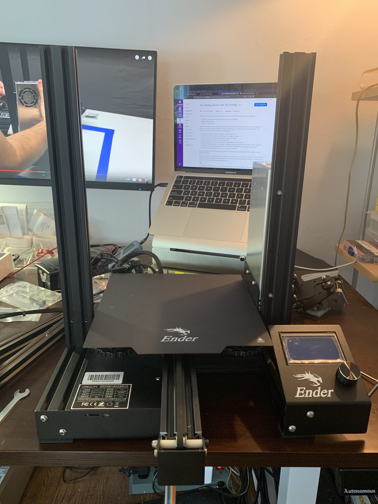

assembly! (1/2)
Pretty immediately after opening my Ender I got curious & overwhelmed as I spread the parts over my limited aparment work area, so I watched a parts tour & assembly video to get a sense of what I was in for. The video linked says the instructions included in the box are straightforward if you're "mechanically minded"; this may well be true, but I knew that other videos would likely have tips & tricks to ensure better initial assembly (like this one & this one, which I found based off view count/likes). I watched it through once on 2x speed overlunch to get a sense of scale, then started.

I was able to work on assembly for about an hour, and got up to the point of attaching the X-drive belt. The most frustrating parts I encountered were: getting the Z-stop switch to attach firmly using the T nuts (which became easy once I realized I should keep the T nuts riiight on the end of the screw) and getting the horizontal extrusion of the X axis perfectly straight; this is a step that is not in the assembly instructions but was discussed in the video I built along with. After feeding the X axis extrusion through the Z-leadscrew, I found that the right-hand side was just over a millimeter higher than the left. To adjust, I removed the extrusion and adjusted the tightness of the M4x16 bolts which attach the carriagge to the extrusion. This took a couple of iterations to get right, but in the end I got both sides lined up.
Having never assembled a printer before, I was struck by how straightforward everything was (so far), but also how many different insider tips there were in the build videos that aren't in the instructions. I'd be interested in how different my end print quality would be had I only used Creality's 12-step process. For some of the subtler build tips - such as the alignment of the X-axis described above - I also found myself overexaggerating the instructions to make sure something was happening before going back over to do it correctly. The first time I tried to straighten the axis, I wasn't sure I was adjusting the correct bolts, so I loosened them dramatically to make sure the extrusion drooped - after confirming, I went back to alignment. It was also difficult to translate over video & text instruction the builders' reliance on 'feel', for example when adjusting the eccentric nuts to get the wheels rolling properly.